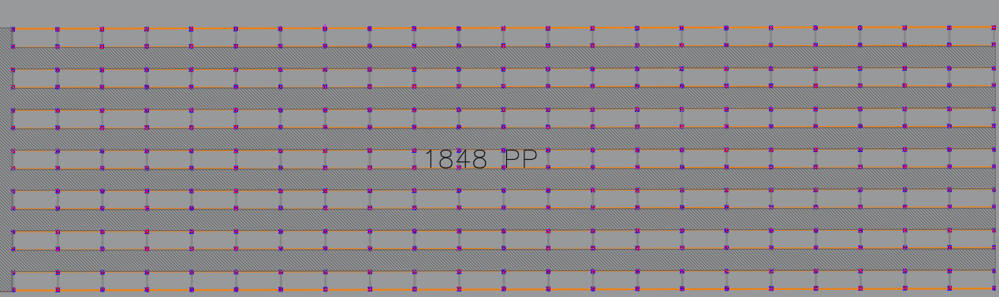
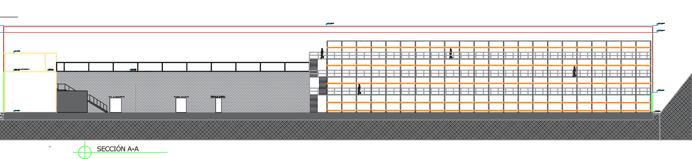
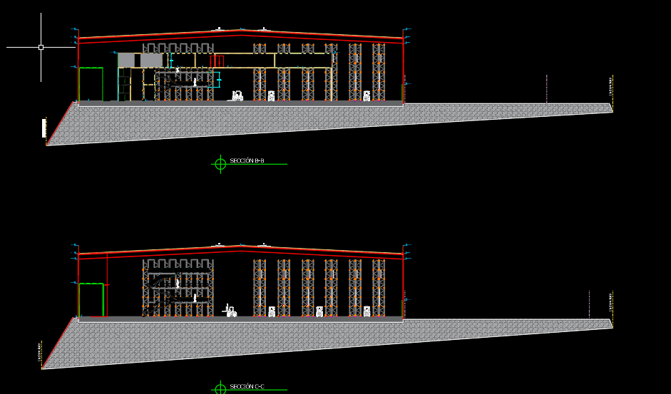

Análisis estructural gravitacional de barras
Método de rigidez con barras Euler–Bernoulli: pórticos transversales 2D, bases empotradas y nudos rígidos y amarres en todos los niveles en Y; vigas longitudinales y viguetas articuladas. Es una descomposición gravitacional del sistema, no una corrida SAP ni un modelo espacial 3D. No incluye sismo, viento, segundo orden, vibración peatonal, conexiones o cargas de racks. Los perfiles son una propuesta preliminar.
Índice preliminar de barras: interacción axial/flexión y esbeltez local; longitud de pandeo conservadora 2× la altura de tramo (K=2). No constituye una certificación completa NEC-SE-AC. Las reacciones verticales calculadas alimentan las zapatas en X y Y. Sus momentos y fuerzas horizontales deben incorporarse a un diseño integral de cimentación; las verificaciones actuales de zapata solo usan N.
Eje crítico—por mayor descarga de servicio
Descarga de servicio—del eje, sin zapata
Acero estructural total—sin piso, barandas ni escaleras
Zapata en detalle—ancho × espesor
Comparación del eje crítico en X y en Y
El eje crítico de cada orientación se identifica por la mayor descarga total de servicio. La comparación usa las dimensiones actuales guardadas para cada alternativa; no se suman sus zapatas ni sus volúmenes.
Verificación individual:
Pruebe un B o h menor: el resultado y las filas rojas se actualizan al escribir. «Dimensionar» busca otras dimensiones y reemplaza su propuesta manual.
Predimensionamiento gravitacional. «Cumple» se refiere exclusivamente a las verificaciones mostradas. La aprobación integral NEC requiere análisis sísmico y de viento, asentamientos, estabilidad, anclajes, desarrollo de barras y revisión del sistema metálico por el responsable estructural.
Zapatas en la orientación seleccionada
Planta de columnas y zapatas independientes
Descarga por columna del eje seleccionado
Optimizar sección de zapata
Modifique B o h aquí: el dibujo y la verificación se actualizan inmediatamente.
Estructura metálica y cargas adicionales
El subtotal de estructura excluye piso metálico, barandas y escaleras; ambas categorías se incluyen en D.
Masa (t) = longitud × kg/m ÷ 1.000. Peso (kN) = masa (t) × 9,80665. El inventario se integra en D sin duplicar el peso de columnas.
Memoria de cálculo y alcance
NEC-SE-CG: cargas y combinaciones gravitacionales, §3.4.3; NEC-SE-HM y ACI 318 adoptado por NEC: resistencia de hormigón armado; NEC-SE-GC: cimentaciones y parámetros geotécnicos. Se consideran 1,4D; 1,2D + 1,6L + 0,5Q; 1,2D + L + 1,6Q, con Q = 0 porque no hay cubierta. La portancia usa D + L + Q, sin mayorar. Estas combinaciones no representan la envolvente sísmica o de viento.
NEC-SE-CG · MIDUVI · NEC-SE-HM · MIDUVI
Referencias documentales oficiales. La consulta automática del PDF oficial no estuvo disponible; confirme edición vigente, categoría de uso y aplicabilidad antes de emitir un diseño definitivo. El barrido selecciona el menor volumen B×h de cada zapata que cumple con el armado ingresado; no optimiza costos ni sustituye el diseño constructivo.
Implantación y cortes de referencia
Referencias visuales suministradas. No se extrajeron cotas ni perfiles de estos dibujos.


